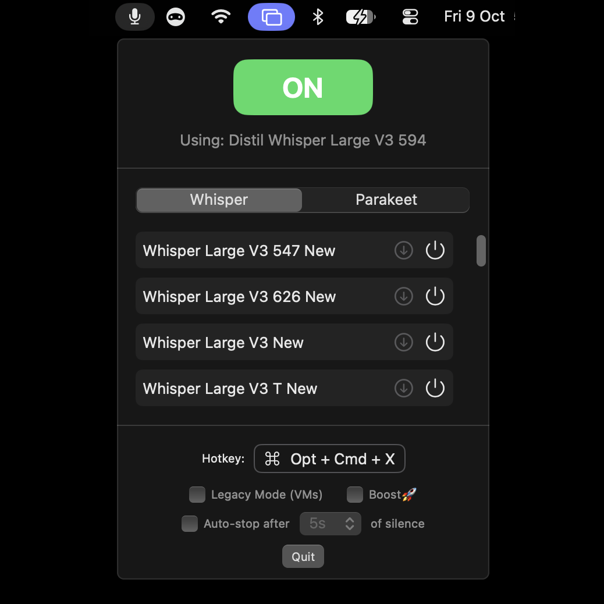
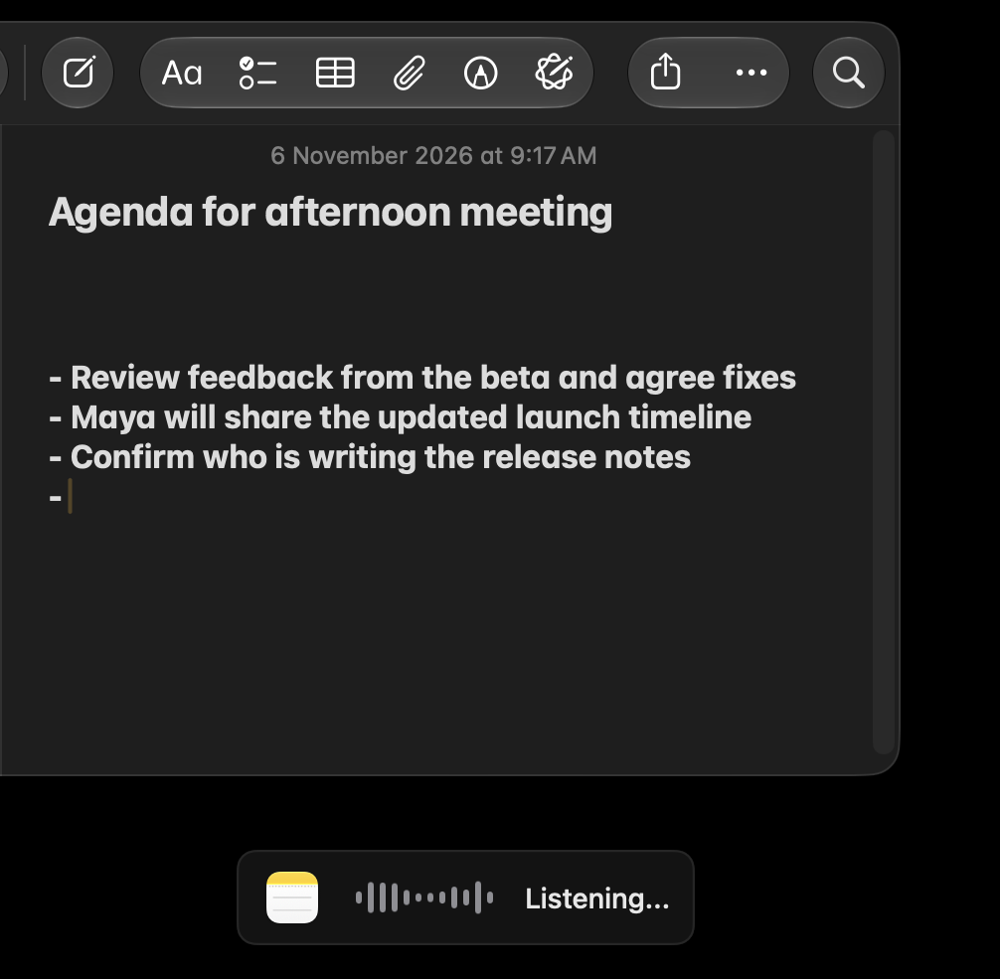

WisprWave for Mac, by Caligence
Speak into any app. Your voice stays on your Mac.
WisprWave is a free, open-source menu bar app that turns speech into text. It runs Whisper and Parakeet speech models locally, then types the result wherever your cursor is.
Free. macOS 14 or later. Optimized for Apple Silicon.


What it does
Runs on your Mac
Transcription happens locally through Apple's Core ML, using WhisperKit and FluidAudio. Once a model is downloaded, dictation works in airplane mode.
Types into any app
Dictate into Notes, Slack, Obsidian, VS Code or a terminal. WisprWave pastes text into the active window, so apps need no special support.
Stays out of the way
It lives in the menu bar. Press your hotkey to dictate, and optionally let it stop by itself after a set period of silence.
Two speech engines
Switch between them at the top of the model list. Only one model is held in memory at a time.
| Whisper (default) | Parakeet v2 | Parakeet v3 | |
|---|---|---|---|
| From | OpenAI | NVIDIA | NVIDIA |
| Languages | Dozens | English | 25 European languages |
| Models | Tiny to Large-v3 | Parakeet TDT 0.6B v2 | Parakeet TDT 0.6B v3 |
| Download | Varies by model | About 460–480 MB | About 460–480 MB |
| Boost Mode | Yes | Not needed | Not needed |
| Best for | Wide language coverage | The most accurate English | European languages |
Parakeet transcribed 29 seconds of audio in about 0.13 seconds in our test on an M4 Max. Speed depends on your Mac and model.
Three recording modes
Standard
Records everything first, then transcribes it in one pass when you stop. Simple and reliable for short dictations.
Boost
For Whisper on a native Mac. Transcribes in the background while you speak, so only the last second or two remains when you stop.
Legacy
For virtual machines such as VMware, Parallels and UTM, or if you hit audio driver problems. Records to a temporary file, then transcribes.
Get started
- Download and installDownload WisprWave.zip, unzip it and drag WisprWave.app to Applications.
- Open it for the first timeCurrent releases aren't signed with an Apple Developer ID, so macOS may block the app. Go to System Settings > Privacy & Security and choose Open Anyway.
- Grant two permissionsMicrophone, to hear you. Accessibility, to paste text into the active app.
- Download a modelPick one from the menu bar panel. After this, dictating doesn't need an internet connection.
- Press the hotkey and speakThe default is ⌘ ⇧ ; and you can change it in the menu bar panel.
Prefer to build it yourself? You'll need Xcode 15 or later.
git clone https://github.com/panks/wispr-wave.git
cd wispr-wave && ./package_app.shWhere your data goes
- Your voice
- Processed on your Mac. WisprWave doesn't send it to us or anyone else.
- Your text
- Pasted into the active app. WisprWave keeps no transcript history. What happens next depends on that app.
- Model downloads
- Fetched from Hugging Face, which can see your IP address, as with any download.
- Tracking
- WisprWave's code has no analytics and no account system.
Also on Linux
A Linux version provides the same dictation flow for GNOME on Wayland and for KDE/Kubuntu, as a background service with a tray icon. It uses Parakeet v2 through sherpa-onnx, and was tuned on low-power hardware.
Questions
Is it really free?
Yes. There are no paid tiers, API keys or subscriptions, and the source code is public under the MIT License.
Does it work offline?
Yes, once a model is downloaded. The first download needs an internet connection; dictation after that doesn't.
Which model should I start with?
For English, try Parakeet v2. For Whisper, we recommend Large V3 632T. Smaller models download faster but are generally less accurate.
Why does macOS warn me when I first open it?
Current releases aren't signed with an Apple Developer ID, so macOS can't verify them through its usual check. Developer ID signing and notarization are what we plan to move to. Until then, you can use Open Anyway, or build the app from source.
Why does it need Accessibility permission?
WisprWave sends a paste keystroke to put text into the active app, and macOS requires this permission to allow it.
Does it touch my clipboard?
Briefly. It saves your clipboard, places the text there, pastes it and restores your clipboard about half a second later. A clipboard manager, if you use one, may record the text during that moment.
How do I get help?
Release history
- v1.4.0 Oct 2026
Adds NVIDIA Parakeet as a second speech engine, with a Whisper | Parakeet switch. Dictations with no speech now show "No speech detected".
- v1.3.1 Oct 2026
Fixes random quitting on macOS 27. First Linux version, for GNOME on Wayland and KDE/Kubuntu.
- v1.3.0 May 2026
More reliable model downloads with a real progress bar. Accessibility permission now survives updates. Faster Boost Mode for short dictations. Optional auto-stop on silence.
- v1.2.0 May 2026
Keeps all model files in Application Support, so nothing lands in your Documents folder.
- v1.1 Feb 2026
Improves Boost Mode and adds a busy indicator.
- v1.0 Feb 2026
First public release.
Credits
- Whisper models by OpenAI, run with WhisperKit.
- Parakeet TDT 0.6B v2 and v3 by NVIDIA, with Core ML conversions by FluidInference (v2, v3), licensed under CC-BY-4.0.
- FluidAudio (Apache-2.0) runs the Parakeet models.
WisprWave isn't affiliated with or endorsed by OpenAI, NVIDIA or Apple. Their names and trademarks belong to their owners.